Factoriature
기계 도감 (임시 제목)
공장 게임 Factoriature의 최신 모델을 모았어요. 기계 39종과 벨트·물류 12종에 화물 열차, 탈것, 이야기 구조물, 오프닝 세트까지 같은 낮 조명으로 찍었어요. 뒷면 보기 버튼으로 뒤쪽을 볼 수 있고, 사진을 누르면 앞뒤를 나란히 크게 볼 수 있어요.
레시피 북 보기 → 사전 보기 →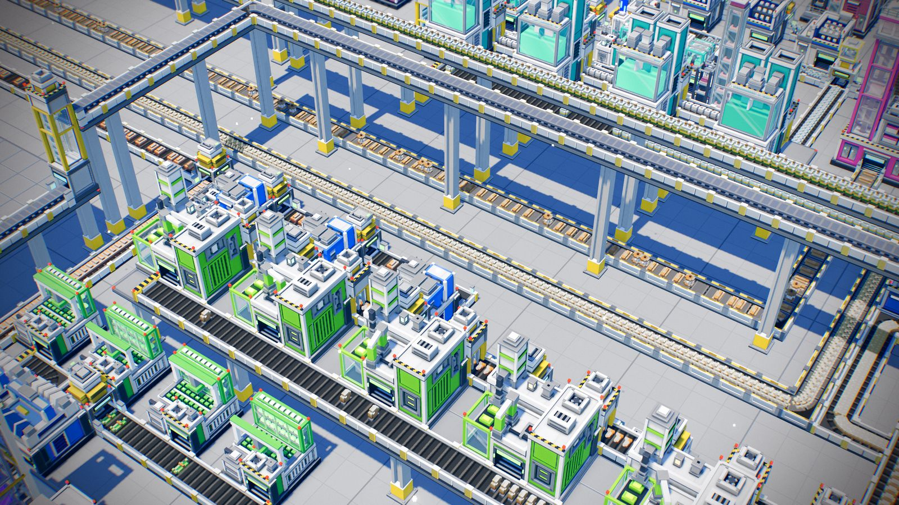
합격은 직접 보고 고른 기계이고, 임시는 아직 바뀔 수 있는 모델이에요. 점수는 비평 에이전트가 앞뒤 사진을 보고 10점 만점으로 매긴 값이고, 그 지적을 고친 뒤 찍은 사진이라 지금은 더 나을 수 있어요. 게임 0.12.0 기준이에요.
벨트와 물류
어두운 리브와 흰 난간을 쓰는 지금의 벨트예요. 등급은 재질과 빛으로 구분해요.

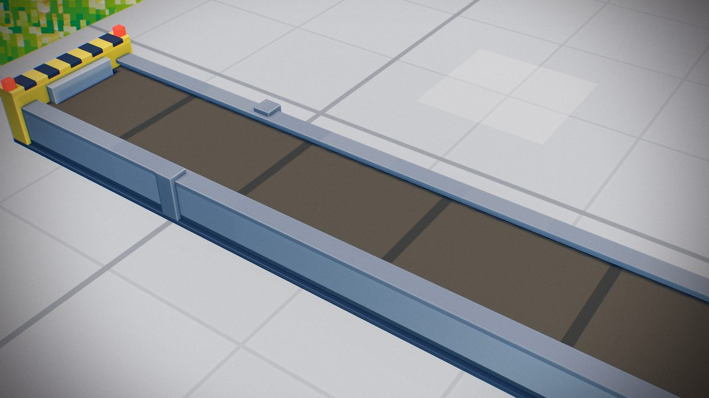
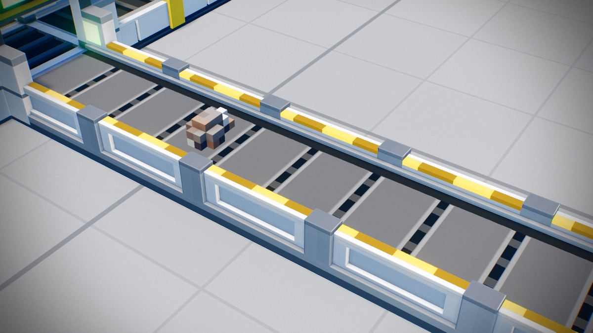
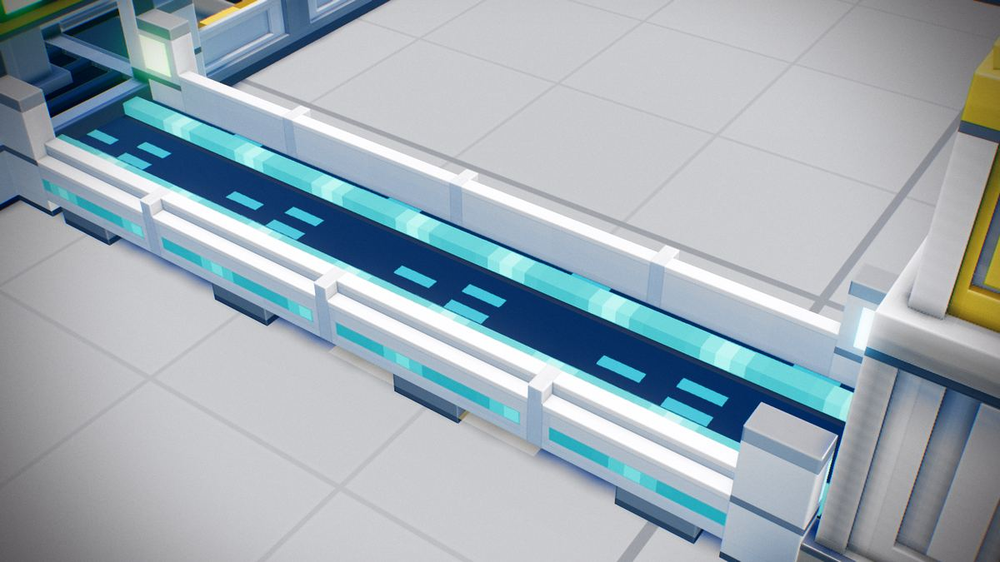
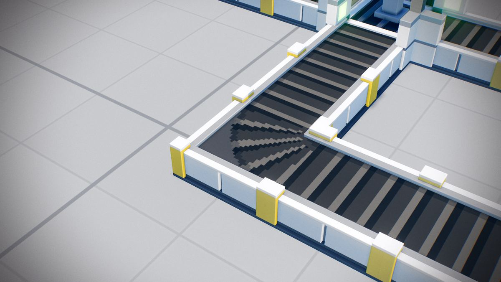
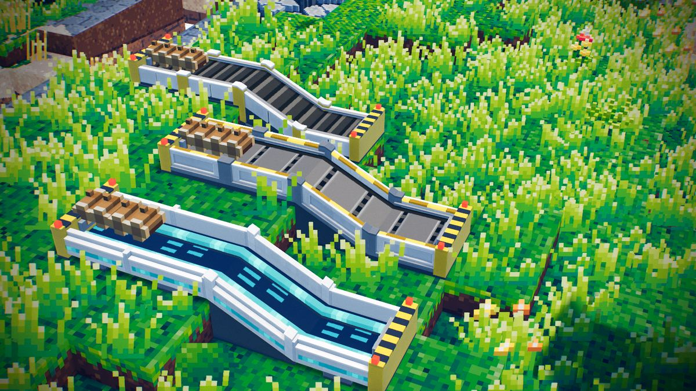
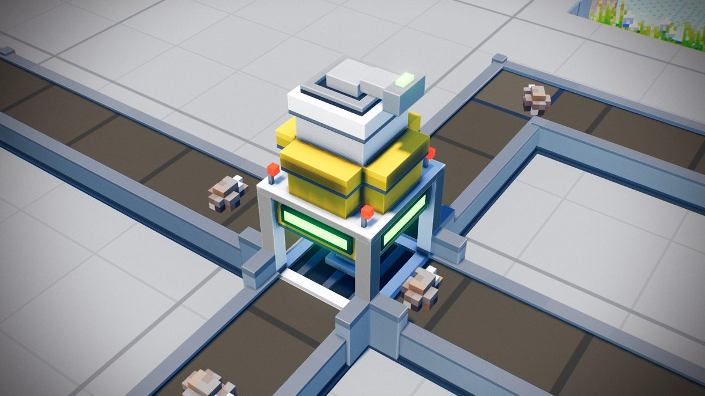
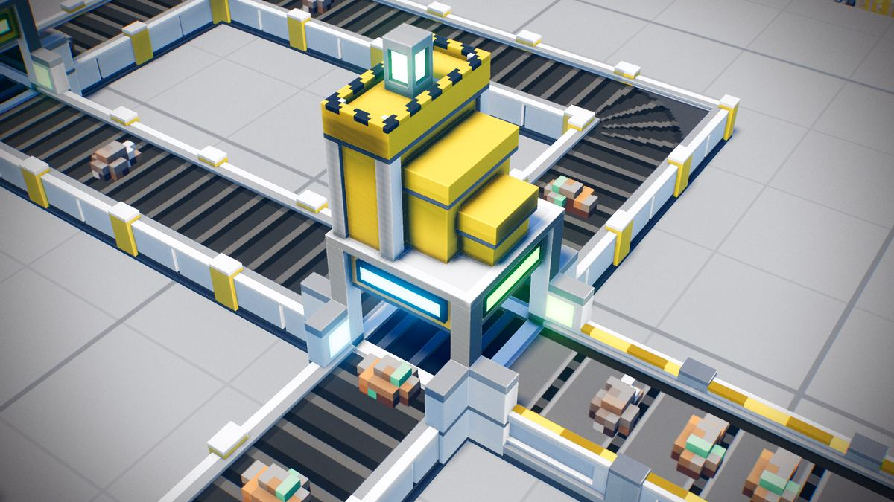
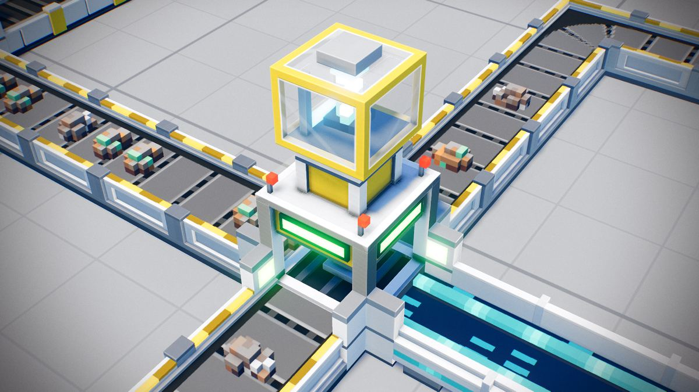
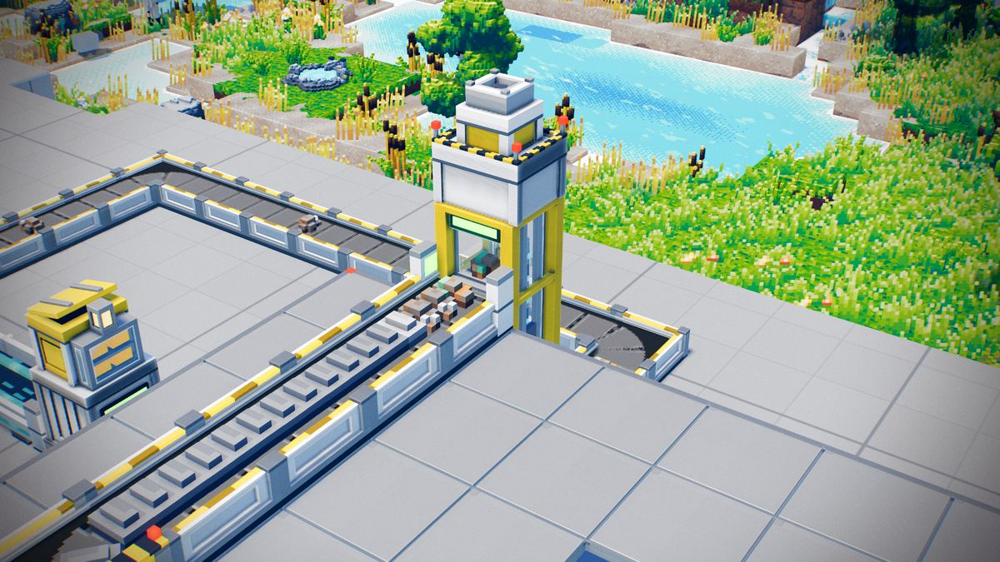
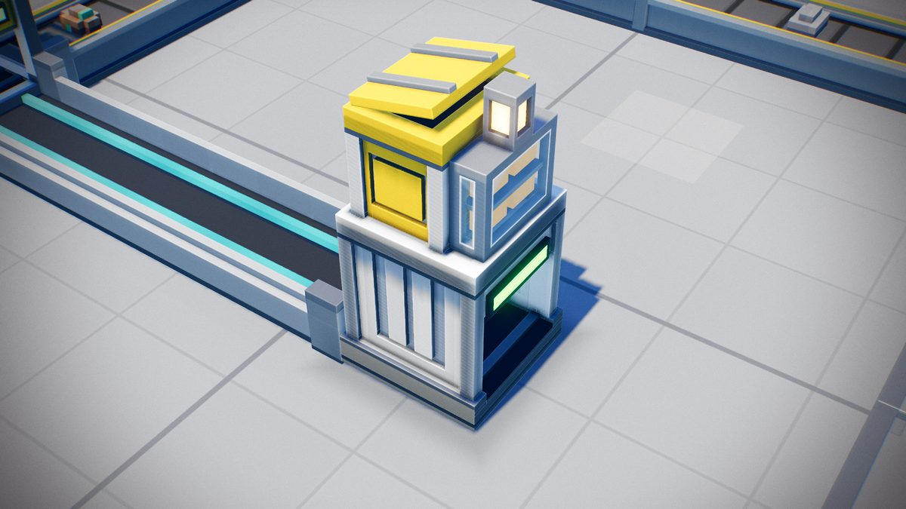
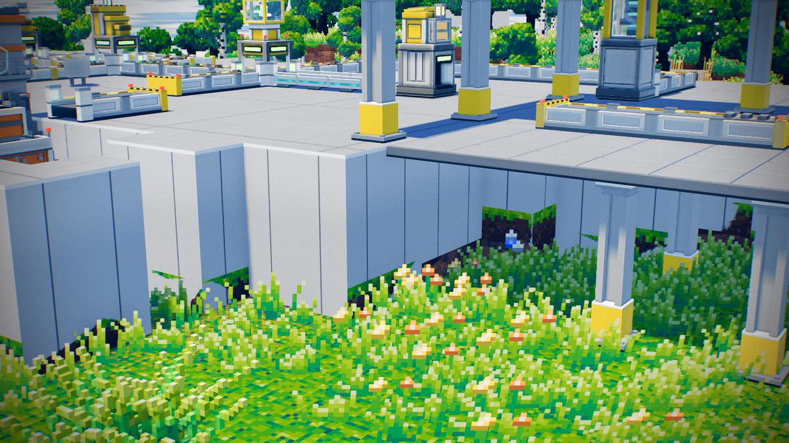
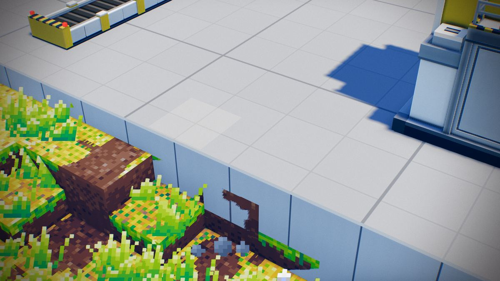
화물 열차
화물 열차와 선로 세트예요. 아직 모델만 있고 게임 기능은 없어요.
탈것
플레이어가 지어서 타는 탈것이에요. 흰색과 하늘색으로 맞췄어요.
이야기 구조물
엔딩까지 눈앞에서 쌓아 올리는 구조물이에요. 아직 모델만 있고 게임 기능은 없어요.
오프닝 세트
게임이 시작되는 불시착 현장이에요. 아직 모델만 있고 게임 기능은 없어요.